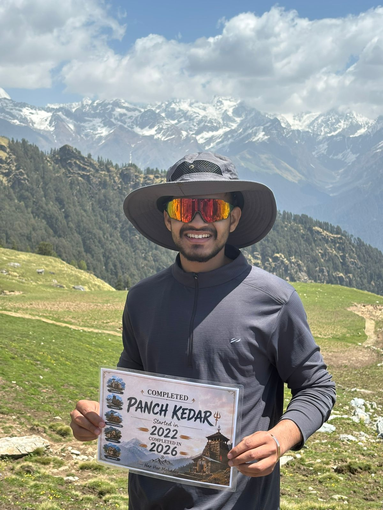
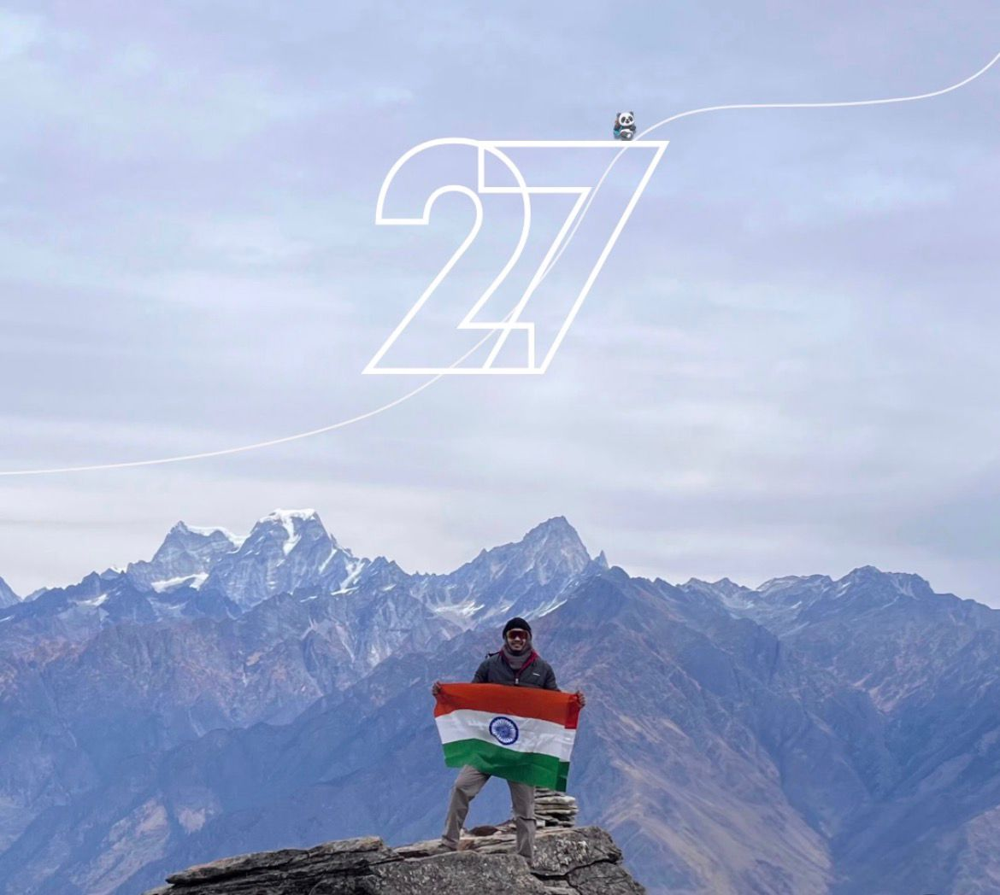
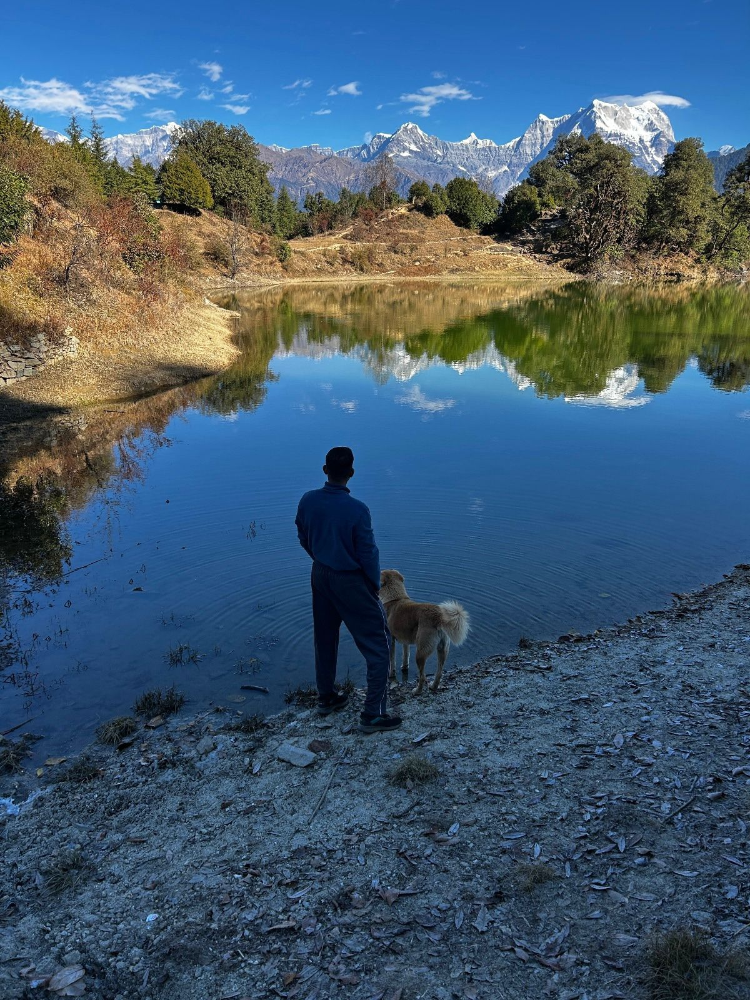
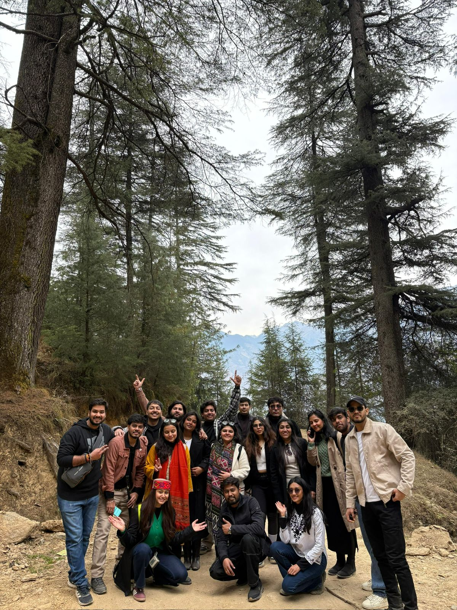
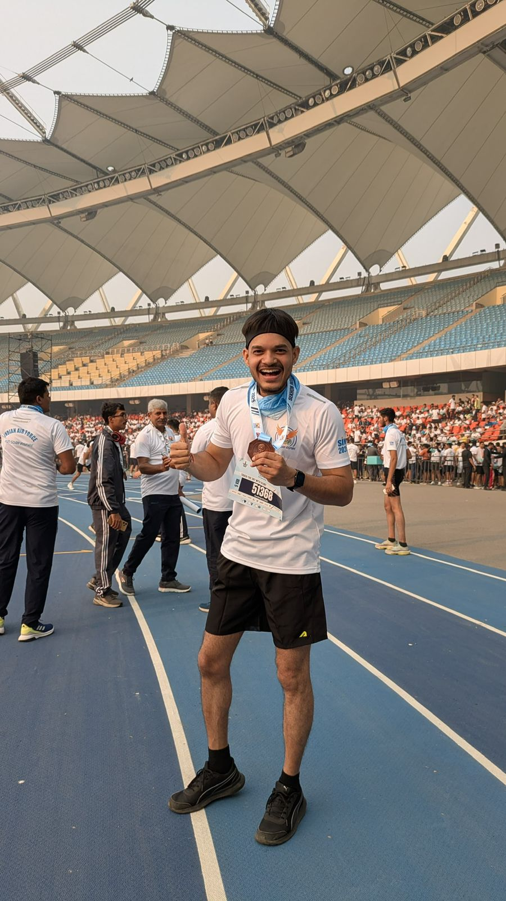
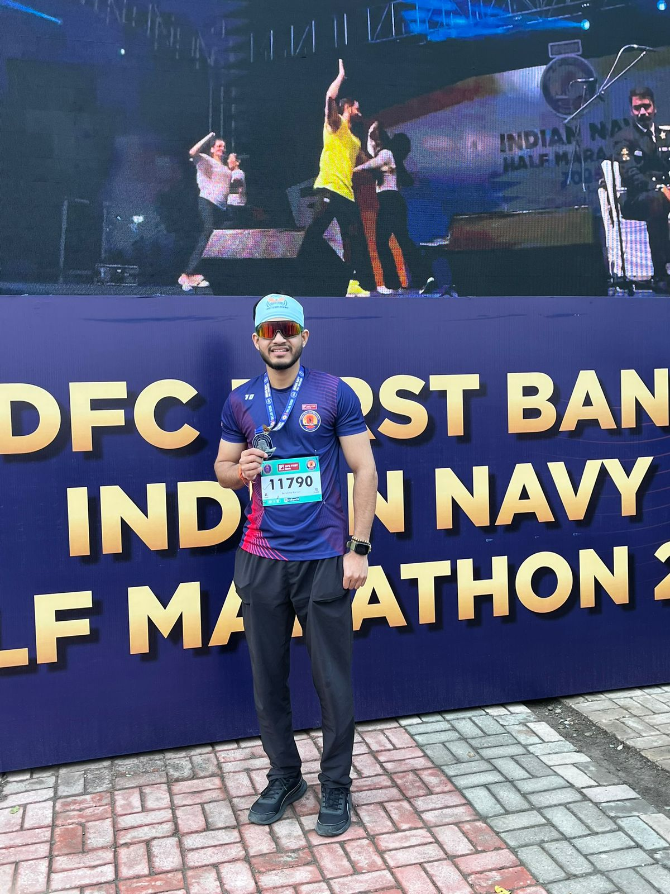

Field log

Panch Kedar Circuit
A multi-day high-altitude trek across five sacred Himalayan peaks in Uttarakhand, completed end to end.

High-Altitude Treks
Five high-altitude treks led as an outdoor leader — planning routes, logistics, and safety at elevation.

Solo Treks
10+ solo treks and trips across the Himalayas and beyond — self-supported, self-navigated.

Delhi Trails
A recurring local trail series exploring lesser-known trekking routes close to Delhi, run through Mr Junket.

5K Run
Indian Air Force 5K Run — bronze medal finish, bib #51368.

10K Run
IDFC First Bank Indian Navy Half Marathon event, 10K category — bib #11790.
The venture behind it
Mr Junket
Founded May 2024. An outdoor leadership and community-travel venture — organizing group trips, running the "Delhi Trails" local hike series, and partnering with hostels and local communities on trip logistics. Roles across it: outdoor leader, guide, host, and operations head.
Instagram